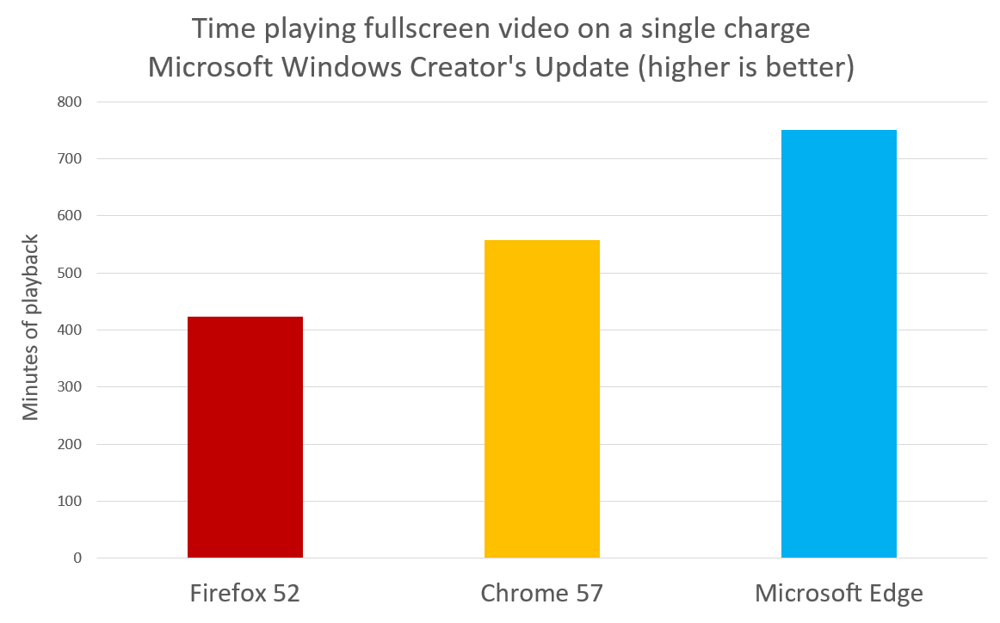

The Microsoft Edge team measured the time it took three identical Surface Book laptops to run fully through their batteries while streaming video from Vimeo in fullscreen.
The test was done on three Surface Books running build 15063 and connected to the Internet through Wifi.
Microsoft Edge lasted 77% longer than Firefox and 35% longer than Chrome in this test.
| Time | Minutes | |
| Firefox 52 | 7:04:19 | 424 |
| Chrome 57 | 9:17:03 | 557 |
| Microsoft Edge | 12:31:08 | 751 |
The test was performed on theree separate Surface Book laptops running Windows 10 Creator's Update (15063.0 release). These computers were configured to the following settings, to increase consistency between measures and reduce tasks that may start during the measurement and interfere with the results, while still representing a realistic user setup:
| OS | Windows 10 Pro 15063.0 |
| Microsoft Edge | Microsoft Edge 40.15063.0.0 |
| Chrome | Google Chrome 57.0.2987.133 (64-bit) |
| Firefox | Firefox 52.0.1 (32-bit) |
| Processor | i5-6300U @ 2.4GHz 2.5GHz |
| Memory | 8G |
| Graphics | Intel HD Graphics 520 |
While plugged in, each respective browser was navigated to Vimeo.com, set to the same video with auto-looping enabled, set to play, and set to fullscreen. The video played was: https://vimeo.com/210519384